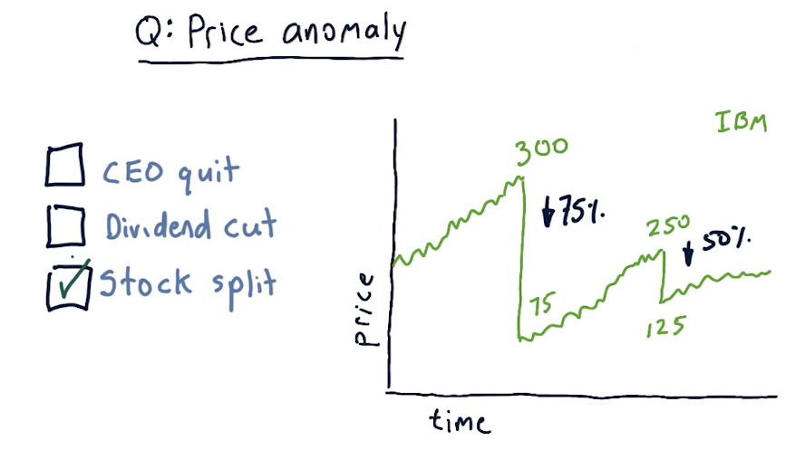
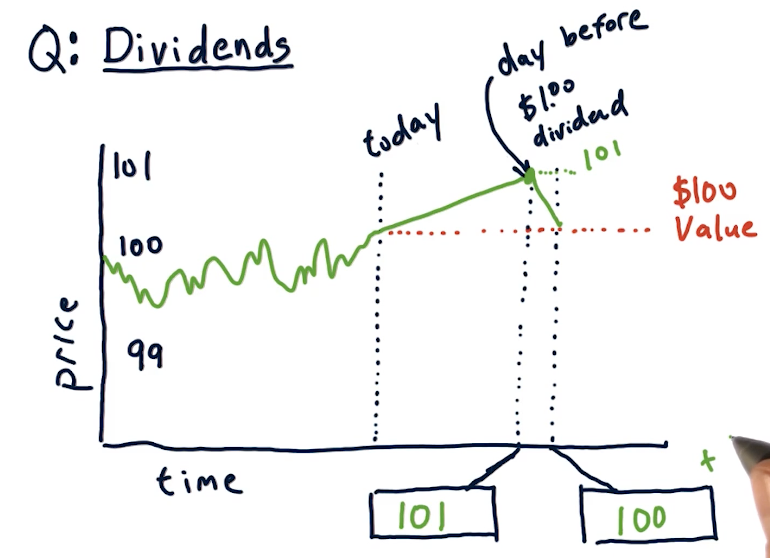
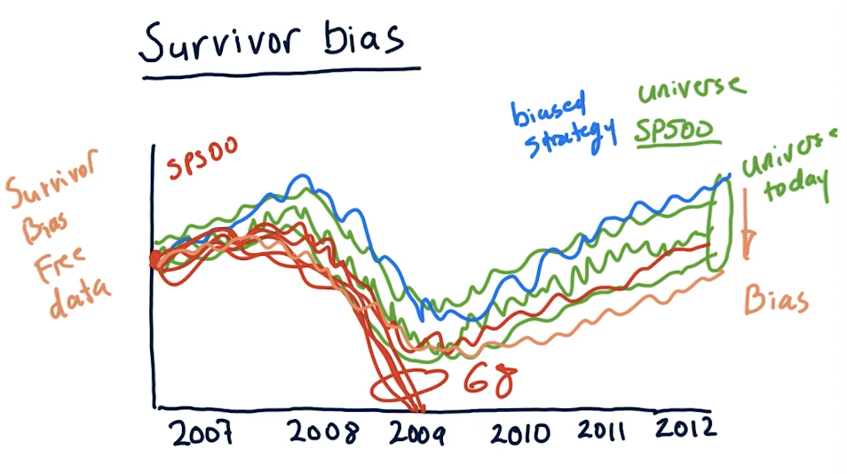

2-7: Dealing with data
Data is obviously important for computational investing. The core data that we work with in this course is historical price and volume data.
How data is aggregated
The unit of measurement for transactions is called a tick. These ticks happen at no particular time, and they can be happening across multiple exchanges. For each tick, we track the price and volume of the transaction across time. A high-level representation from the lectures is below:

A lot of transactions occur during a trading day, and tracking every single tick requires a lot of computing and a lot of space to store the data. We can aggregate the data by only tracking the price of a specific stock during certain time slices. For this class, we'll be tracking specific metrics by day, however, with more computing you could feasibly track metrics with smaller time slices. Per time slice, we track the following metrics:
- open - the first price on the first trade
- high - the highest trade price during the time slice
- low - the lowest trade price during the time slice
- close - the last trade price during the time slice
- volume - how much of the stock was traded during the time slice
A high-level overview from the lectures is provided below:

Price anomaly
A large drop in the price of shares for a given stock is called a price anomaly. A slide from the lectures is provided below. In this case, the stock experienced a stock split, cause the price to drop tremendously.

Stock splits
Why do stocks split? The most common reason is because the price is too high . Why are high prices a problem? Highly priced stocks cause them to be less liquid, making it harder to trade and buy options on the stock. High prices also make it difficult to finely tune portfolios, especially if you want to have a specific percentage of allocation for one security.
An issue with stock splits is that your machine learning model could mistake this large drop in price as an opportunity to short the stock, however, this stock isn't actually losing value - more shares are available. This is why adjusted close was created, allowing us to adjust the true price of the stock and avoid confusion due to stock splits. A slide from the lecture is provided below:

Dividends
Companies pay shareholders dividends, usually some percentage of the stock price like %1. When conducting computational trading, we'll have to account for this as the stock ticks up in price dependent upon the dividend expected to be paid out. The usual trend for a stock is that the stock rises by the amount of the dividend the day before it is processed. Immediately after that, the stock price decreases back to its original value. A slide from the lectures is below:

Adjusting for dividends
Just like stock splits, we can account for dividends by using the adjusted close price with the latest data from an exchange. A lecture from the slides demonstrating this is provided below:

Survivor bias
Survivor bias is a built-in bias that we can encounter when analyzing our strategy over time using stocks that currently exist today. We assume that our strategy works well, but we're using data in the future, not the past. If we were to conduct the same strategy in the past, in this case in 2007, we can see that 68 stocks completely plummeted during the 2008 crash, leaving the SP500. In this case, these stocks did not survive and our strategy completely failed.
We can purchase survivor bias free data to conduct analysis of our strategy, but this is something we should always keep in mind and avoid. A slide from the lectures is provided below:
